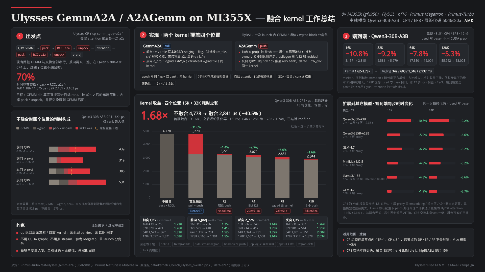

summary_figure.html，1920×1080）。Ulysses 序列并行（Megatron cp_comm_type=a2a）在每层 attention 前后各做一次 all-to-all。Turbo 现有路径（flash_attn_usp_func）全部串行：
反向再来一遍。GEMM 和通信都在关键路径上，pack / unpack 是纯开销。以 Qwen3-30B-A3B CP4 为例，四个位置不融合时的耗时构成（µs，各 rank 最大值，bench_ulysses_overlap.py）：
| 位置 | 长度 | GEMM | wgrad | pack / unpack | RCCL a2a | 不融合合计 | 完全重叠下限 |
|---|---|---|---|---|---|---|---|
| 前向 QKV | 16K / 32K | 86 / 162 | — | 110 / 185 | 249 / 473 | 439 / 829 | 249 / 473 |
| 前向 o_proj | 16K / 32K | 76 / 131 | — | 37 / 65 | 215 / 386 | 319 / 579 | 215 / 386 |
| 反向 o_proj | 16K / 32K | 67 / 128 | 78 / 145 | 37 / 65 | 212 / 388 | 386 / 714 | 212 / 388 |
| 反向 QKV | 16K / 32K | 88 / 146 | 85 / 156 | 74 / 123 | 252 / 474 | 531 / 981 | 252 / 474 |
| 合计 | 16K / 32K | 交换（pack + a2a）占 71% / 70% | 1,675 / 3,103 | 928 / 1,721 | |||
完全重叠下限 = max(GEMM + wgrad, a2a)，即交换全部藏到计算后面时的耗时。这个模型 hidden 只有 2048，GEMM 很轻，交换占比高，所以选它作为主线和优化验证集。
实现两个融合 kernel，反向复用同样的模板：
| kernel | 做法 | 覆盖位置 |
|---|---|---|
| GemmA2A | GEMM 的每个输出 tile 算完直接送到目标 rank，落地就是 a2a 之后的 [s, b, h/n, d] 布局；沿 N（head）维切，tile 之间无依赖 | 前向 QKV；反向 o_proj dgrad |
| A2AGemm | 直接接收各 rank 的 attention 输出，数据到一块算一块，epilogue 加 residual；沿 K 维切，最后到达的那一片无法隐藏 | 前向 o_proj；反向 QKV dgrad |
kernel 的目标是逼近上表的"完全重叠下限"（Qwen3-30B-A3B CP4 16K 四项合计 928 µs，不融合 1,675 µs），端到端的目标是这部分节省能落到训练每步上。
| 问题 | 本实现的处理 |
|---|---|
| 没改的 kernel 变慢（flash-attn 慢 17–23%） | 交给 attention 的张量全是普通 caching-allocator 张量；对称内存只放单次调用内用完的 staging / recv；op 返回后不留常驻或自旋 kernel。实测 attention / MLP 变化在 ±2% 以内 |
| post 侧全局 barrier（26–45 µs） | 无全局 barrier：逐 tile flag，值为单调递增 epoch，双 bank 交替；epoch 由最后退出的 block 推进，不需要 host 参与 |
| post_pack 拷贝（约 20 µs） | A2AGemm 的发送方按 flash-attn 原生 strided 布局原地读取 O，直接写进目标 rank 的 recv bank |
iteration_rules 单变量迭代：每轮跑全验证集和正确性，变差即回退，每轮留快照和 summary。| kernel | 模式 | 原因 |
|---|---|---|
| GemmA2A | pull | GEMM epilogue 原样写本地对称 staging 并置本地 flag；接收方通信 block 轮询远端 flag，读 peer staging，直接按 a2a 之后的布局写进普通张量。push 的话目的地只能是对称内存，还要再拷一次 |
| A2AGemm | push | 数据源是 flash-attn 输出的普通张量，peer 拿不到地址；发送方原地读、写进目标 rank 的 recv bank，再对目标 flag 做 atomic |
实测 8 卡 all-to-all：用到 56 个 CU 时读和写都在 350–380 GB/s 饱和，pull 可行；CU 少时 pull 吃亏（远端读延迟高）。
(m_tile, src=(me+i)%n) 领取，7 条链路同时忙。num_push 个 block 先推数据，推完去算最后几个 tile；每个 GEMM tile 等齐本 m-tile 所有来源的 flag 后跑 K 循环；residual 在 epilogue 以 fp32 加到累加器上，只舍入一次。grouped_gemm_bf16_variable_k_tile，加了 a_base、k_hook、persistent="staggered" 三个可选参数。反向 QKV 的 dW 按来源 rank 天然可分，直接读 recv bank；反向 o_proj 的 dW_o 不依赖交换，插在 GEMM tile 序列中间。[ng, hq/ng+2, d] 下每个 rank 的 head 就是连续的行，不用重排；concat 布局按 rank 重排一次并缓存。| 接口 | 说明 |
|---|---|
ulysses_qkv_gemm_a2a(x, w_qkv, hq, hkv, d, group, qkv_format) | 返回本地 head、完整序列的 q / k / v；反向是 A2AGemm（dx + dW_qkv 同一 kernel） |
ulysses_a2a_o_gemm(o, w_o, residual, group, qkv_format) | 返回本地序列、全部 hidden 的 y；反向是 GemmA2A（dO + dW_o 同一 kernel） |
Primus ulysses_fused_a2a_patches.py | turbo_ulysses_fused_a2a: 1 开启：CP 切分改为 contiguous，RoPE 放到 a2a 之后按全长序列做，attention 用本地 flash_attn_func；不满足条件时回退原路径。设为 -1 为同路径串行对照；kernel launch 参数按形状自动选择，Turbo op 的 fwd_tuning / bwd_tuning 可覆盖（供 benchmark 扫参） |
支持范围：bf16，n ∈ {2, 4, 8}，sbhd / bshd，b ≥ 1，GQA / MHA，d 64 / 128，交错 / concat 权重。
tests/pytorch/ops/test_ulysses_fused_a2a.py（torchrun）：fp32 F.linear → Turbo 现有 pack / all_to_all_single / unpack 作参考，比前向输出和全部梯度（dx、dW_qkv、dW_o、d_residual）。首版另按任务给定的单算子目标验收过（Llama3.1-8B 32K n=8 四个位置），全部达标。
测量口径：每次计时前 barrier 对齐、往 GPU 队列塞 _sleep 藏住 host 下发时间，取中位数再取各 rank 最大值。bench_ulysses_overlap.py 在同一口径下给出 GEMM、wgrad、a2a、pack 单独时间，串行、理想重叠、fused 和 roofline（实测峰值 GEMM 1,241 TFLOP/s、链路 n=4 每 rank 145 GB/s）。
3fd085a2）→ 前向 A2AGemm + residual epilogue、反向 o_proj（2ffa6317）→ 反向 QKV（a7925bfe），四个位置单算子全部达标。发现之前的计时混入约 75 µs 的 flyc.jit host 开销，改用 run_launcher 缓存后降到约 26 µs，基线也用同一口径重测。63c6c077，540 → 430 µs）；第 3、4 轮（94d83cca、29ee6148）。PRIMUS_ULYSSES_FUSED_A2A=1）；写 2 节点和多模型 proxy 测试 prompt（402171e4、60687e12）。183450cc）；MegaAttn 第 1–5 轮（分支 feat/mega-attn），收益小，暂停。789d51d1），bwd QKV push block 32 → 16（第 10 轮 5d3e68e6）。第 11–13 轮回退（935d9ca0、69991df7）。最后按 wgrad tile 数切换 launch 参数，修好 GLM-4.7 宽形状（50d6c80a）。| 位置 | kernel | 16K | 32K | 64K | 128K |
|---|---|---|---|---|---|
| 前向 QKV | GemmA2A | 439 → 256 1.71× | 829 → 471 1.76× | 1,573 → 867 1.81× | 3,057 → 1,821 1.68× |
| 前向 o_proj + residual | A2AGemm | 319 → 236 1.35× | 579 → 410 1.41× | 1,112 → 731 1.52× | 2,163 → 1,391 1.55× |
| 反向 o_proj（dgrad + dW_o） | GemmA2A | 386 → 240 1.61× | 714 → 412 1.73× | 1,341 → 781 1.72× | 2,552 → 1,558 1.64× |
| 反向 QKV（dgrad + dW_qkv） | A2AGemm | 531 → 302 1.76× | 981 → 514 1.91× | 1,901 → 951 2.00× | 3,717 → 1,828 2.03× |
| 合计 | 1,675 → 1,034 1.62× | 3,103 → 1,807 1.72× | 5,927 → 3,330 1.78× | 11,489 → 6,598 1.74× |
16K / 32K 为 R10 代码，64K / 128K 为最终代码，每个长度的不融合和融合都在同一次运行里测。合计 16K + 32K 为 4,778 → 2,841 µs（1.68×）；距完全重叠下限 928 / 1,721 µs 还差 11% / 5%；64K / 128K 的 fused 是 roofline 的 1.00–1.13×。最终提交 50d6c80a 只改了 wgrad tile 多的形状的 launch 参数，Qwen3-30B-A3B 的数据不变。
指标 = 四个位置在 16K、32K 下的耗时之和（越低越好）。灰色为这一步的结果，红色为这一步减少的部分。
| 轮 | 状态 | 改动 | fwd QKV | fwd o | bwd o | bwd QKV | 之和 | 结论 |
|---|---|---|---|---|---|---|---|---|
| 1 | 基线 | pull GemmA2A + push A2AGemm，o_proj wgrad 在 side stream（63c6c077） | 271 / 479 | 269 / 435 | 277 / 430 | 418 / 691 | 3,270 | 受交换限制；A2AGemm 尾巴是最后到达后的一整个 256×256 tile |
| 2 | 回退 | A2AGemm 剩余 tile 做 split-K | — | 每个 item 约 40 µs，部分和合并慢 | ||||
| 3 | 保留 | 各源从不同 m-tile 错位推送，tile 按到达顺序走 K（94d83cca） | 270 / 481 | 235 / 437 | 275 / 431 | 372 / 722 | 3,223 | 16K fwd o −13%、bwd QKV −11% |
| 4 | 保留 | 按形状选 BM：A2AGemm tile 多于 CU 时 128 行；GemmA2A 128 行（29ee6148） | 252 / 461 | 235 / 405 | 246 / 437 | 374 / 662 | 3,072 | 首批 pull 提前（55 → 30 µs），最后一个 tile 的尾巴减半 |
| 5 | 回退 | bwd o wgrad 用 mega tn tile 放进 GemmA2A grid | bwd o 269–300 / 509–544 | tn tile K 循环全展开，kernel 内慢约 3 倍 | ||||
| 6 | 回退 | bwd QKV wgrad 按 M 分块放 side stream，hipStreamWaitValue64 门控 | bwd QKV 457–662 / 746–933 | 并发 GEMM 拖慢交换，比串行还慢 | ||||
| 7 | 回退 | A2AGemm 按 head piece 推送 | fwd o 271–287 / 415 | 256 B 行段推得慢；逐段等 flag 清空 MMA 流水 | ||||
| 8 | 回退 | GemmA2A 在 epilogue 里直接写远端 | fwd QKV 286–326 / 518–569 | 64 B epilogue 写跨 XGMI 远慢于 16 B/lane 行拷贝 | ||||
| 9 | 保留 | 两个 wgrad 都进融合 kernel（variable-K tile），去掉 side stream（789d51d1） | 255 / 462 | 238 / 410 | 227 / 416 | 323 / 556 | 2,887 | 生产 variable-K tile 在 kernel 内比 tn tile 快约 3 倍；R5 失败是 tile 的问题 |
| 10 | 保留 | bwd QKV 有 wgrad 时 push block 32 → 16（5d3e68e6） | 256 / 471 | 236 / 410 | 240 / 412 | 302 / 514 | 2,841 | wgrad 进来后受计算限制，16 个 pusher 仍能占满链路 |
| 11 | 回退 | bwd QKV 末尾 dgrad tile 按来源 split-K + 固定顺序归约 | bwd QKV 330–411 / 570–637 | 负载下部分和走显存只有约 10–15 GB/s/CU | ||||
| 12 | 回退 | 20–80 个 wgrad tile 排在 dgrad 之后 | bwd QKV 352–357 / 661–688 | dgrad 不再积压，但后置 wgrad tile 要 115–134 µs | ||||
| 13 | 回退 | bwd QKV block 内错位来源 + 按到达走 K | bwd QKV 304–380 / 518–531 | 受 CU 预算限制：约 10% 的 dgrad tile 在最后一次 push 时才拿到 CU | ||||
| 方向 | 结论 |
|---|---|
| MegaAttn（GEMM + 交换 + attention 一个 kernel） | 条带切分、持久化 attention、QKV GemmA2A + attention 合并、O tile 直推 owner 共 5 轮，前向整层只省 85 / 270 µs（约 2%）。原因：GEMM 和 attention 都受计算限制不能互相重叠，能藏的只有交换，而前向两段已贴着链路时间；修正后的上限是 13.2%（16K）/ 7.9%（32K）。已暂停，代码在 feat/mega-attn |
| SDMA / copy engine 做交换 | 3 个 stream 的 peer copy 205 µs（123 GB/s），比 push 实现慢 |
| XCD remap / GROUP_M、epilogue cache modifier、main 上的 dense tile | 都在 265–275 µs，没有差别 |
按到达顺序累加（deterministic=False） | 关键 rank 上各阶段已不含等待，只能缩短非关键 rank 的等待，不缩短整层 |
| DeepSeek-V3 / MLA | up-proj 输入很窄、a2a 量约为 GEMM 的 8 倍，照搬收益很小；更好的做法是对 latent 做 all-gather（通信约降到 1/30），需单独立项 |
| 长度 | base ms/iter | fused ms/iter | fused / base | 第 12 步 loss（base / fused） |
|---|---|---|---|---|
| 16K | 3,157.1 | 2,814.6 | −10.8% | 11.6226 / 11.6244 |
| 32K | 6,581.1 | 5,978.6 | −9.2% | 11.6143 / 11.6124 |
| 64K | 17,349.9 | 16,003.6 | −7.8% | 11.6006 / 11.6007 |
| 128K | 55,941.8 | 53,004.7 | −5.3% | 11.6040 / 11.6042 |
8× MI355X，TP1 / CP4（Ulysses）/ EP8 / DP2，MBS 1，GBS 16，mock 数据，12 步，取第 4–12 步中位数；Turbo 50d6c80a，Primus feat/ulysses-fused-a2a，不用 CUDA graph。kernel 每层每 micro-batch 省 0.64 / 1.30 / 2.60 / 4.89 ms（16K / 32K / 64K / 128K），48 层 × 8 个 micro-batch 合计约 246 / 498 / 997 / 1,878 ms；实测每步省 343 / 603 / 1,346 / 2,937 ms，多出的部分主要来自 patch 路径换用的 FlyDSL attention（在这个形状上比 AITER 快）。序列越长 attention（随长度平方增长）占比越大，相对收益下降。128K 显存 fused 254.6 GB、base 255.0 GB。
| 模型 | CP / EP | 16K base → fused ms | 16K | 32K base → fused ms | 32K |
|---|---|---|---|---|---|
| Qwen3-30B-A3B（完整 48 层） | 4 / 8 | 3,157 → 2,815 | −10.8% | 6,581 → 5,979 | −9.2% |
| Qwen3-235B-A22B 4 层 proxy | 4 / 8 | 631 → 594 | −5.9% | 1,321 → 1,234 | −6.6% |
| GLM-4.7 4 层 proxy | 4 / 8 | 1,081 → 1,008 | −6.7% | 2,133 → 2,001 | −6.2% |
| MiniMax-M2.5 4 层 proxy | 4 / 8 | 625 → 595 | −4.8% | 1,190 → 1,128 | −5.2% |
| Llama3.1-8B（完整 32 层，attention 用 AITER） | 4 / 1 | 2,332 → 2,231 | −4.3% | 5,342 → 5,150 | −3.6% |
| GLM-4.7 4 层 proxy | 8 / 8 | 1,390 → 1,363 | −1.9% | 2,402 → 2,312 | −3.7% |
flash_attn_func 给这个形状（每 rank 8 个 q 头 / 2 个 kv 头）选了更慢的 FlyDSL attention，16K 反而慢 5.6%；这和融合无关，表中 fused 侧用 PRIMUS_TURBO_ATTN_BACKEND=AITER 与 base 对齐。32K 两种 attention 结果相同。main_grad / gradient_accumulation_fusion 未支持；FlyDSL 磁盘缓存 key 不含类体，曾加载到旧 kernel（建议上游修）。feat/ulysses-gemm-a2a）| commit | 内容 | 日期 |
|---|---|---|
3fd085a2 | feat(flydsl): Ulysses fused QKV GEMM + all-to-all forward (GemmA2A) | 11-06 |
2ffa6317 | A2AGemm o_proj forward with fp32 residual epilogue, fused o_proj dgrad via GemmA2A | 11-06 |
a7925bfe | QKV backward as A2AGemm, layer / stream tests, A/B benchmark | 11-06 |
63c6c077 | o_proj wgrad beside the GemmA2A dgrad, serial / overlap / roofline bench, buffer-poisoning test | 11-06 |
94d83cca | A2AGemm: staggered sub-tile pushes + progressive K walk in arrival order（第 3 轮） | 11-06 |
29ee6148 | 128-row tiles where they shorten the critical path（第 4 轮） | 11-06 |
402171e4 | end-to-end Qwen3-30B-A3B training results, 2-node e2e prompt, optimization tips | 11-06 |
60687e12 | single-node multi-model proxy e2e prompt | 11-06 |
183450cc | single-node multi-model proxy e2e report | 11-07 |
92f7e98f | docs: wgrad overlap status（第 5、6 轮结果） | 11-07 |
789d51d1 | both wgrads inside the fused kernels (variable-K tiles, no side stream)（第 9 轮） | 11-07 |
5d3e68e6 | bwd QKV A2AGemm uses 16 push blocks with in-kernel wgrad（第 10 轮） | 11-07 |
935d9ca0 | rounds 11-12 rolled back, analysis of the in-step tail | 11-07 |
69991df7 | round 13 rolled back, CU-budget analysis | 11-07 |
50d6c80a | wgrad tile order by count（GLM-4.7 宽形状） | 11-07 |
另有 Primus feat/ulysses-fused-a2a 的 patch（ulysses_fused_a2a_patches.py，含 f9a298a49 pre-hook 修复），以及 MegaAttn 分支 feat/mega-attn。